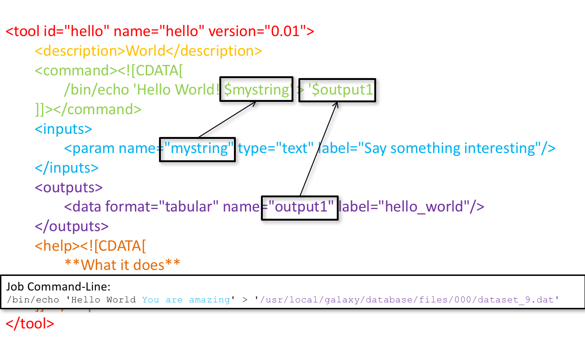
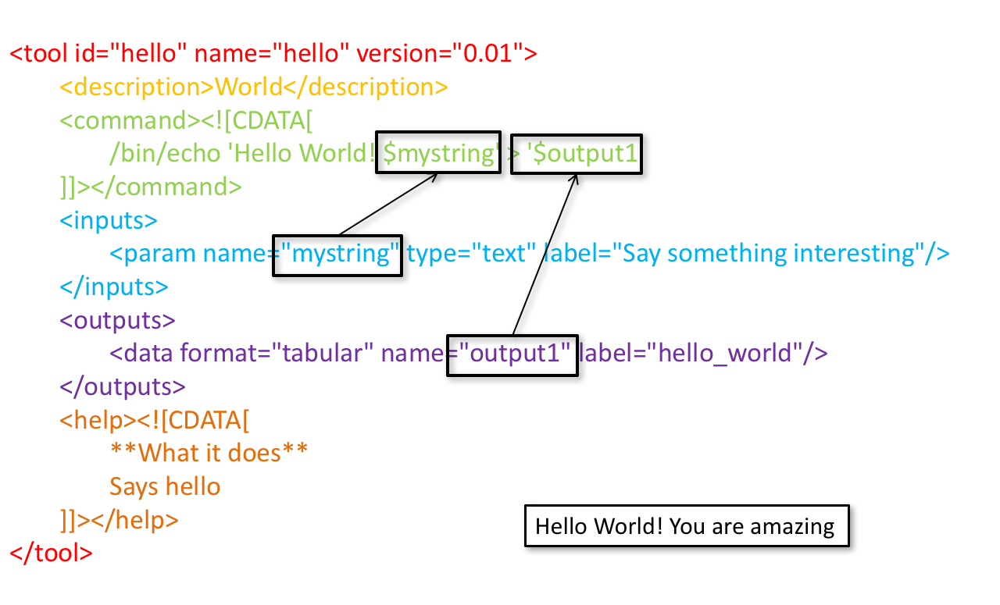
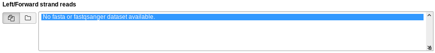
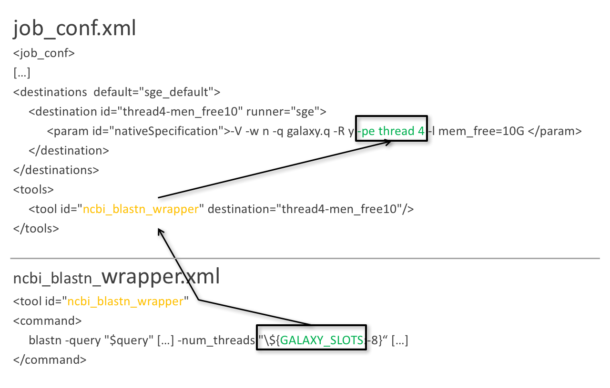

Tool development and integration into Galaxy
Contributors
Questions
What is a tool for Galaxy?
How to write a best-practice tool?
How to deal with the tool environment?
Objectives
Learn what a tool is and its structure
Use the Planemo utilities to develop a tool
Deal with the dependencies
Write functional tests
Make a tool ready for publishing in a ToolShed
Galaxy tools
Tools in the Galaxy UI
Galaxy tool / wrapper
graphlan.py --format png --size 7 'input_tree.txt' 'png_image.png'
class: left
So what is a tool?
Link between the Galaxy UI and the underlying tool:
- Description of the user interface
- How to invoke the tool
- Which files and options to pass
- Which files the tool will produce as output
Tool execution
Speaker Notes
<inputs>(datasets and parameters) specified in the tool XML are exposed in the Galaxy tool UI- When the user fills the form and click the
Executebutton, Galaxy fills the<command>template in the XML with the inputs entered by the user and execute the Cheetah code, producing a script as output - Galaxy creates a job for the generated script and executes it somewhere (bowtie2 is run in this case)
- Some (not necessarily all) output files become new history datasets, as specified in the
<outputs>XML tag set
Tool execution
Speaker Notes
- CDATA tags are used to prevent the interpretation of ampersands and less-than signs as XML special characters
- The tool name and description are combined in the left panel (tool menu), keep them short!
Tool execution

Tool execution

Tool XML
Galaxy tool XML format is formally defined in a XML Schema Definition (XSD), used to generate the corresponding online documentation
XML Editor
You are free to use your prefered code editor to write Galaxy tools.
If you use Visual Studio Code (or Codium), we recommend to install the dedicated extension.
It provides XML validation, tags and attributes completion, help/documentation on hover, and other smart features to assist in following best practices.
tool
<tool id="graphlan" name="GraPhlAn" version="1.1.3+galaxy2" profile="22.05">
id: unique identifier of your tool, should contain only[a-z0-9_-]name: shown to the user, displayed in the tool boxversion: the version of the wrapped tool, followed by a+galaxyXsuffix for wrapper versionprofile: minimum Galaxy version that should be required to run this tool (IUC recommends not older than 1 year)
Speaker Notes
- The top level
tooltag defines the tool naming and version - The
idattribute is the unique identifier of your tool, it should contain only letters, digits, underscores or dashes - The
nameattribute is shown to the user and displayed in the tool box - The
versionattribute contains the version of the wrapped tool, followed by a+galaxyXsuffix for wrapper version - The
profileattribute should be set to the minimum Galaxy version that should be required to run this tool (IUC recommends not older than 1 year)
command
How to invoke the tool?
<requirements>
<requirement type="package" version="1.1.3">graphlan</requirement>
</requirements>
<command><![CDATA[
graphlan.py
--format $format
...
]]></command>
If the script is provided with the tool xml:
<requirements>
<requirement type="package" version="2.7">python</requirement>
</requirements>
<command><![CDATA[
python '$__tool_directory__/graphlan.py'
--format $format
...
]]></command>
Speaker Notes
- In the first case,
graphlan.pyis expected to be on the PATH and executable when the job executes. This is usually accomplished by specifying some<requirement/>tags. - In the second case,
$__tool_directory__is a special variable which is substituted by Galaxy with the directory where the tool XML is
inputs > param to command
Parameters are directly linked to variables in <command> by the name or argument attribute
Parameters can be optional or required.
<command><![CDATA[
graphlan.py
...
#if str($dpi):
--dpi $dpi
#end if
'$input_tree'
...
]]></command>
<inputs>
<param name="input_tree" type="data" label="..."/>
<param argument="--dpi" type="integer" optional="true" label="..."
help="For non vectorial formats" />
</inputs>
- The
#if ... #end ifsyntax comes from the Cheetah template language, which has a Python-like syntax
Speaker Notes
- The
nameorargumentattribute identifies a parameter (details ofargumentlater). - Parameters have different types (
data,data_collection,integer,float,text,select,boolean,color,data_column,…) and can be optional.
inputs > param > data
<param name="..." type="data" format="txt" label="..." help="..." />
.footnote[List of possible formats]
inputs > param > integer | float
<param name="..." type="integer" value="7" label="..." help="..."/>
<param name="..." type="float" min="0.4" max="1.0" value="0.9" label="..." help="..."/>
Speaker Notes
- In the first case, Galaxy creates a text box which accepts only integer values
- In the second case, since both
minandmaxare specified, a slider is shown in addition
inputs > param > text
<param name="..." type="text" value="..." label="..." help="..."/>
inputs > param > select
<param name="..." type="select" label="...">
<option value="png" selected="true">PNG</option>
<option value="eps">EPS</option>
<option value="svg">SVG</option>
</param>
If no option has selected="true", the first one is selected by default.
inputs > param > select
<param name="..." type="select" display="radio" label="..." help="...">
<option value="min" selected="true">Minimum</option>
<option value="mean">Mean</option>
<option value="max">Max</option>
<option value="sum">Sum</option>
</param>
inputs > param > select
<param name="..." type="select" multiple="true" label="..." help="...">
<option value="ld" selected="true">Length distribution</option>
<option value="gc" selected="true">GC content distribution</option>
...
</param>
inputs > param > boolean
<param name="..." type="boolean" checked="false" truevalue="--log" falsevalue=""
label="..." help="..." />
class: reduce70
inputs > param > conditional
.pull-left[] .pull-right[]
<command><![CDATA[
#if $fastq_input.selector == 'paired':
'$fastq_input.input1' '$fastq_input.input2'
#else:
'$fastq_input.input'
#end if
]]></command>
<inputs>
<conditional name="fastq_input">
<param name="selector" type="select" label="Single or paired-end reads?">
<option value="paired">Paired-end</option>
<option value="single">Single-end</option>
</param>
<when value="paired">
<param name="input1" type="data" format="fastq" label="Forward reads" />
<param name="input2" type="data" format="fastq" label="Reverse reads" />
</when>
<when value="single">
<param name="input" type="data" format="fastq" label="Single reads" />
</when>
</conditional>
</inputs>
class: reduce70
inputs > param > repeat

<command><![CDATA[
#for $i, $s in enumerate($series):
rank_of_series=$i
input_path=${s.input}
x_column=${s.xcol}
#end for
]]></command>
<inputs>
<repeat name="series" title="Series">
<param name="input" type="data" format="tabular" label="Dataset"/>
<param name="xcol" type="data_column" data_ref="input" label="Column for x axis"/>
</repeat>
</inputs>
Speaker Notes
It makes sense to use a <repeat> block only if it contains multiple related parameters, otherwise adding multiple="true" is preferable.
outputs
.image-25[]
<outputs>
<data name="tree" format="txt" label="${tool.name} on ${on_string}: Tree" />
<data name="annotation" format="txt"
label="${tool.name} on ${on_string}: Annotation" />
</outputs>
Speaker Notes
${tool.name} on ${on_string} is the default output label, need to modify this if the tool generates more than 1 output
outputs > filter
Output is collected only if the filter evaluates to True
<inputs>
<param type="select" name="format" label="Output format">
<option value="png">PNG</option>
<option value="pdf">PDF</option>
</param>
</inputs>
<outputs>
<data name="png_output" format="png" label="${tool.name} on ${on_string}: PNG">
<filter>format == "png"</filter>
</data>
<data name="pdf_output" format="pdf" label="${tool.name} on ${on_string}: PDF">
<filter>format == "pdf"</filter>
</data>
</outputs>
Speaker Notes
N.B. If the filter expression raises an Exception, the dataset will NOT be filtered out
detect_errors
Legacy tools (i.e. with profile unspecified or less than 16.04) by default fail only if the tool writes to stderr
Non-legacy tools by default fail if the tool exit code is not 0, which is equivalent to specify:
<command detect_errors="exit_code"> ... </command>
To fail if either the tool exit code is not 0 or “Exception:”/”Error:” appears in standard error/output:
<command detect_errors="aggressive"> ... </command>
stdio
If you need more precision:
<stdio>
<exit_code range=":-2" level="warning" description="Low disk space" />
<exit_code range="1:" level="fatal" />
<regex match="Error:" level="fatal" />
</stdio>
<command> ... </command>
“Warning” level allows to add information to stderr without marking the dataset as failed
help
<help><![CDATA[
**What it does**
GraPhlAn is a software tool for producing high-quality circular
representations of taxonomic and phylogenetic trees. GraPhlAn focuses
on concise, integrative, informative, and publication-ready
representations of phylogenetically- and taxonomically-driven
investigation.
For more information, check the `user manual
<https://bitbucket.org/nsegata/graphlan/overview>`_.
]]></help>
Content should be in reStructuredText markup format
citations

<citations>
<citation type="doi">10.1093/bioinformatics/bts611</citation>
<citation type="doi">10.1093/nar/gks1219</citation>
<citation type="doi">10.1093/nar/gks1005</citation>
<citation type="doi">10.1093/bioinformatics/btq461</citation>
<citation type="doi">10.1038/nbt.2198</citation>
</citations>
If no DOI is available, a BibTeX citation can be specified with type="bibtex"
Quoting params
Always quote text and data parameters and output data in <command>
<command><![CDATA[
graphlan.py
...
'$input_tree'
'$png_output_image'
]]></command>
- For security reasons
- Paths may contain spaces
- Prefer single quotes over double quotes
Multiple commands
Use && to concatenate them
<command><![CDATA[
graphlan.py
--format '$format'
&&
echo "Yeah it worked!"
]]></command>
The job will exit on the first error encountered.
You can use && or ; if using a profile >= 20.09 (the set -e shell directive is now used by default).
Param argument
Use the argument tag when a param name reflects the command line argument
<param argument="--size" type="integer" value="7" label="..." help="..."/>
- It will be appended at the end of the displayed param help
- When
argumentis specified andnameis not,nameis derived fromargumentby removing the initial dashes and replacing internal dashes with underscores
section
Use sections to group related parameters
<section name="advanced" title="Advanced options" expanded="False">
<param argument="--size" type="integer" value="7" label="..." help="..."/>
...
</section>

Command-line utilities to assist in building and publishing Galaxy tools.
##.image-25[ ]
]

##.image-25[ ]
]
planemo tool_init
Creates a skeleton of xml file
$ mkdir new_tool
$ cd new_tool
$ planemo tool_init --id 'some_short_id' --name 'My super tool'
Complicated version:
$ planemo tool_init --id 'samtools_sort' --name 'Samtools sort' \
--description 'order of storing aligned sequences' \
--requirement 'samtools@1.3.1' \
--example_command "samtools sort -o '1_sorted.bam' '1.bam'" \
--example_input 1.bam \
--example_output 1_sorted.bam \
--test_case \
--version_command 'samtools --version | head -1' \
--help_from_command 'samtools sort' \
--doi '10.1093/bioinformatics/btp352'
class: packed
##.image-25[ ]
]
planemo lint: Checks the syntax of a tool
$ planemo lint
Linting tool /opt/galaxy/tools/seqtk_seq.xml
Applying linter tests... CHECK
.. CHECK: 1 test(s) found.
Applying linter output... CHECK
.. INFO: 1 outputs found.
Applying linter inputs... CHECK
.. INFO: Found 1 input parameters.
Applying linter help... CHECK
.. CHECK: Tool contains help section.
.. CHECK: Help contains valid reStructuredText.
Applying linter general... CHECK
.. CHECK: Tool defines a version [0.1.0].
.. CHECK: Tool defines a name [Convert to FASTA (seqtk)].
.. CHECK: Tool defines an id [seqtk_seq].
Applying linter command... CHECK
.. INFO: Tool contains a command.
Applying linter citations... CHECK
.. CHECK: Found 1 likely valid citations.
##.image-25[ ]
]
planemo serve
View your new tool in a local Galaxy instance
$ planemo serve
Open http://127.0.0.1:9090/ in your web browser to view your new tool
##.image-25[ ]
]
Building Galaxy Tools
Functional tests
Functional tests
- Functional testing is a quality assurance (QA) process.
- The tests comfort developers and users that the tools can run across different servers/architectures. And that the latest modifications don’t break older features.
- Tools are tested by feeding them inputs and parameters and verifying the outputs (typically a diff)
tests
<tests>
<test>
<param name="input_tree" value="input_tree.txt"/>
<param name="format" value="png"/>
<param name="dpi" value="100"/>
<param name="size" value="7"/>
<param name="pad" value="2"/>
<output name="png_output_image" file="png_image.png" />
</test>
</tests>
input_tree.txt and png_image.png must be in the test-data/ directory
Tool directory tree
graphlan/
├── graphlan.xml
├── graphlan.py
└── test-data/
├── input_tree.txt
└── png_image.png
Comparing to an expected result
<output ... compare="diff|re_match|sim_size|contains|re_match_multiline" ... />
<output name="out_file1" file="cf_maf2fasta_concat.dat" ftype="fasta" />
<output ... md5="68b329da9893e34099c7d8ad5cb9c940" />
<output ... lines_diff="4" />
<output ... compare="sim_size" delta="1000" />
.footnote[Complete documentation]
Speaker Notes
diffis the defaultftypealso checks the output datatype- With
md5the test output file doesn’t need to be distributed (useful for big output files) lines_diffis useful for tools that output version number, current date, …sim_sizeis useful for binary files that vary at each execution (e.g. PDF)
Checking the output content
<output name="out_file1">
<assert_contents>
<has_text text="chr7" />
<not_has_text text="chr8" />
<has_text_matching expression="1274\d+53" />
<has_line_matching expression=".*\s+127489808\s+127494553" />
<!-- 	 is XML escape code for tab -->
<has_line line="chr7	127471195	127489808" />
<has_n_columns n="3" />
</assert_contents>
</output>
.footnote[Complete documentation]
Checking tool stdout/stderr
<assert_stdout>
<has_text text="Step 1... determine cutoff point" />
<has_text text="Step 2... estimate parameters of null distribution" />
</assert_stdout>
.footnote[Complete documentation]
Nested inputs in test
<tests>
<test>
<section name="advanced">
<repeat name="names">
<param name="first" value="Abraham"/>
<param name="last" value="Lincoln"/>
</repeat>
<repeat name="names">
<param name="first" value="Donald"/>
<param name="last" value="Trump"/>
</repeat>
<conditional name="image">
<param name="output_image" value="yes"/>
<param name="format" value="png"/>
</conditional>
</section>
...
</test>
</tests>
##.image-25[ ]
]
planemo test
Runs all functional tests
$ planemo test
An HTML report (tool_test_output.html) is automatically created with logs in case of failing test
##.image-25[ ]
]
Test Galaxy Tools
Dependencies
Dependencies
How Galaxy will deal with dependencies?

requirements
<requirements>
<requirement type="package" version="1.66">biopython</requirement>
<requirement type="package" version="1.0.0">graphlan</requirement>
</requirements>
Local installation using Conda packages
.image-50[ ]
]
- Package, dependency and environment manager
- Based on recipes describing how to install the software which are then built for their distribution
- No compilation at installation: binaries with their dependencies, libraries…
- Not restricted to Galaxy
See Tool Dependencies and Conda
Advanced features
configfiles
A configfile creates a text file which can then be used inside the command as:
- A script or a module
- A file needed to run the tool (e.g. a config file)
Cheetah code and param/output variables can be used inside configfile (like
inside command).
class: packed
configfiles
<command><![CDATA[ mb $script_nexus ]]></command>
<configfiles>
<configfile name="script_nexus"><![CDATA[
set autoclose = yes;
execute $input_data;
#if str($data_type.type) == "nuc“
lset nst=$data_type.lset_params.lset_Nst;
#end if
mcmcp ngen=$mcmcp_ngen;
mcmc;
quit
]]></configfile>
</configfiles>
set autoclose = yes;
execute dataset_42.dat;
lset nst=2 ;
mcmcp ngen=100000;
mcmc;
quit
macros
![Another schemating with many arrows. Macros.xml is on the left with token and xml blocks. The token block points to examples like @THREADS@ and @HELP_ABOUT@. The xml block points to examples like
.footnote[Planemo documentation about macros]
class: packed
macros > xml
macros.xml
<macros>
<xml name="requirements">
<requirements>
<requirement type="package" version="2.5.0">blast</requirement>
</requirements>
</xml>
<xml name="stdio">
<stdio>
<exit_code range="1" level="fatal" />
</stdio>
</xml>
</macros>
ncbi_blastn_wrapper.xml
<macros>
<import>macros.xml</import>
</macros>
<expand macro="requirements"/>
<expand macro="stdio"/>
macros > token
macros.xml
<macros>
<token name="@THREADS@">-num_threads "\${GALAXY_SLOTS:-8}"</token>
</macros>
ncbi_blastn_wrapper.xml
<command>
blastn -query '$query' @THREADS@ [...]
</command>
macros > xml > yield
macros.xml
<macros>
<xml name="requirements">
<requirements>
<requirement type="package" version="2.2.0">trinity</requirement>
<yield/>
</requirements>
</xml>
</macros>
trinity.xml
<expand macro="requirements">
<requirement type="package" version="1.1.2">bowtie</requirement>
</expand>
@TOOL_VERSION@ token
<macros>
<token name="@TOOL_VERSION@">1.2</token>
<token name="@VERSION_SUFFIX@">3</token>
</macros>
<tool id="seqtk_seq" name="Convert to FASTA" version="@TOOL_VERSION@+galaxy@VERSION_SUFFIX@">
<requirements>
<requirement type="package" version="@TOOL_VERSION@">seqtk</requirement>
</requirements>
This means: the 3rd revision of the Galaxy tool for Seqtk 1.2 .
command > Reserved variables
<command><![CDATA[
# Email’s numeric ID (id column of galaxy_user table in the database)
echo '$__user_id__'
# User’s email address
echo '$__user_email__'
# The galaxy.app.UniverseApplication instance, gives access to all other configuration file variables.
# Should be used as a last resort, may go away in future releases.
echo '$__app__.config.user_library_import_dir'
# Check a dataset type
#if $input1.is_of_type('gff'):
echo 'input1 type is ${input1.datatype}'
#end if
]]></command>
.footnote[Reserved Variables List]
Multiple inputs - Mapping over
<param name="..." type="data" format="txt" label="..." help="..." />
Possible to select multiple dataset:
- Useful to launch the same tool on multiple datasets independently
- One job per dataset
Multiple inputs - Single execution
<param name="..." type="data" format="txt" multiple="true" label="..." help="..." />

In the command:
<command><![CDATA[
...
#for $input in $inputs
--input "$input"
#end for
]]></command>
One job for all selected dataset
Multiple outputs
<outputs>
<data name="output" format="txt">
<discover_datasets pattern="__designation_and_ext__"
directory="output_dir" visible="true" />
</data>
</outputs>
-
__designation_and_ext__: a predefined regexp, -
catches the dataset identifier + the datatype
If the output file extension is not present/usable:
<outputs>
<data name="output" format="txt">
<discover_datasets pattern="__designation__" format="txt"
directory="output_dir" visible="true" />
</data>
</outputs>
Dataset collections
A dataset collection combines numerous datasets in a single entity that can be manipulated together
list: a simple list of datasetspaired: a pair of datasets,forwardandreversefor NGS- composite: e.g.
list:pairedfor a list of dataset pairs
Usage
- Useful to launch a workflow on many samples
- Sample names are kept along the workflow:
element_identifier - Galaxy tools are available to manipulate collections
Dataset collections as input
Mapping over (1 job per collection element):
<param name="inputs" type="data" format="bam" label="Input BAM(s)" />
Single execution:
- accepted with
multiple="true"as described in previous slides - or you can accept only collections:
<param name="inputs" type="data_collection" collection_type="list|paired|list:paired|..."
format="bam" label="Input BAM(s)" />
<command><![CDATA[ ...
#for $input in $inputs
--input '$input'
--sample_name '$input.element_identifier'
#end for
]]></command>
Dataset collections as output
A single paired collection:
<collection name="paired_output" type="paired" label="Split Pair">
<data name="forward" format="txt" />
<data name="reverse" format_source="input1" from_work_dir="reverse.txt" />
</collection>
Unknown number of files:
<collection name="output" type="list" label="Unknown number of files">
<discover_datasets pattern="__name_and_ext__" directory="outputs" />
</collection>
__name_and_ext__: a predefined regexp,- catches the dataset identifier + the datatype
Using multiple CPUs

blastn -query foo_bar -num_threads 4
8 is the default value if not set in destination
Data tables
- They list all reference data used by tools
- e.g.: Blast databases, BWA indexes, Fasta files
- Stored in
.locfiles - Populated by hand or using Data Managers
- Data Managers are dedicated kind of Galaxy tools
Using a data table in a tool
Datatypes
- Every Galaxy dataset is associated with a datatype
- Datatype can be detected or user specified
- Gain of usability
.footnote[Documentation: Adding Datatypes]
Publishing tools
Contributing to a community
Many tools developed by the community on GitHub repositories
Added value:
- Easier development
- Easier contribution for user
- Avoid duplications of efforts
- Automated tests on each contribution
- Automated publishing to ToolShed
-
Principle of many eyes: if something is visible to many people then, collectively, they are more likely to find errors in it
IUC: Intergalactic Utilities Commission
.image-50[]
- A team maintaining high quality tools
- Establishing and following best practices for tool development
- Open to contributions: bug fixes, new tools, …
https://github.com/galaxyproject/tools-iuc
How should I publish my tool?
Adding to an existing GitHub repository (IUC, GalaxyP, …)
- Read the guidelines
- Open a pull request
- Respond to review comments
How should I publish my tool?
Using your own GitHub repository
- Reasons: ownership, specific practices, exotic tools
- Follow the same structure as IUC
- Automate tests and ToolShed publishing by reusing
.github/configuration
How should I publish my tool?
Using planemo by hand
- Ok for few tools
- Makes contributing harder
- Not recommended
Check out our tutorial to publish to the ToolShed using Planemo
Continuous Integration
.image-50[]
.image-50[ ]
]
.image-50[ ]
]
Continuous Integration
- Create a Pull Request on a GitHub repository
- Tests are automatically run on GitHub Actions
- Other contributors review your tool
- The Pull Request is accepted when all the lights are green
- The tool is automatically uploaded to the ToolShed
GitHub Actions configuration
GitHub Actions configured in the .github/ directory
Uses a standard GitHub Action developed on https://github.com/galaxyproject/planemo-ci-action
GitHub Actions execution
GitHub Actions: test reports
Downloadable HTML report, open it with a web browser to see the details
.pull-left[]
.pull-right[]
ToolShed
- Need to create a
.shed.ymlfile in the tool directory of the GitHub repository:
categories: [Sequence Analysis]
description: Tandem Repeats Finder description
long_description: A long long description.
<span id="tandem_repeats_finder_2"><i class="fas fa-link" aria-hidden="true"></i> tandem_repeats_finder_2</span>
owner: gandres
planemo shed_init --name="tandem_repeats_finder_2"
--owner="gandres"
--description="Tandem Repeats Finder description"
--long_description="A long long description."
--category="Sequence Analysis"
[--remote_repository_url=<URL to .shed.yml on github>]
[--homepage_url=<Homepage for tool.>]
Tool suites
A tool suite is a group of related tools that can all be installed at once.
Defined in .shed.yml: implicitly define repositories for each individual tool in the directory and build a suite for those tools.
Example: trinity/.shed.yml
[...]
auto_tool_repositories:
name_template: ""
description_template: " (from the Trinity tool suite)"
suite:
name: "suite_trinity"
description: Trinity tools to assemble transcript sequences from Illumina RNA-Seq data.
Check
planemo shed_lint --tools --ensure_metadata
Linting repository […]/tandem_repeats_finder
Applying linter expansion... CHECK
.. INFO: Included files all found.
Applying linter tool_dependencies_xsd... CHECK
.. INFO: tool_dependencies.xml found and appears to be valid XML
Applying linter tool_dependencies_actions... CHECK
.. INFO: Parsed tool dependencies.
Applying linter repository_dependencies... CHECK
.. INFO: No repository_dependencies.xml, skipping.
Applying linter shed_yaml... CHECK
.. INFO: .shed.yml found and appears to be valid YAML.
Applying linter readme... CHECK
.. INFO: No README found skipping.
+Linting tool […]/tandem_repeats_finder/tandem_repeats_finder_wrapper.xml
[…]
Key Points
- Galaxy Tool Syntax
- Use Planemo
- Use Conda
- Use GitHub
- Use GitHub Actions
- No more excuse to develop crappy Galaxy tools
curriculum Do you want to extend your knowledge?
Follow one of our recommended follow-up trainings: - [Development in Galaxy](/training-material/topics/dev) - Tool Dependencies and Conda: [slides slides](/training-material/topics/dev/tutorials/conda/slides.html)Thank you!
This material is the result of a collaborative work. Thanks to the Galaxy Training Network and all the contributors! Tutorial Content is licensed under
Creative Commons Attribution 4.0 International License.
Tutorial Content is licensed under
Creative Commons Attribution 4.0 International License.